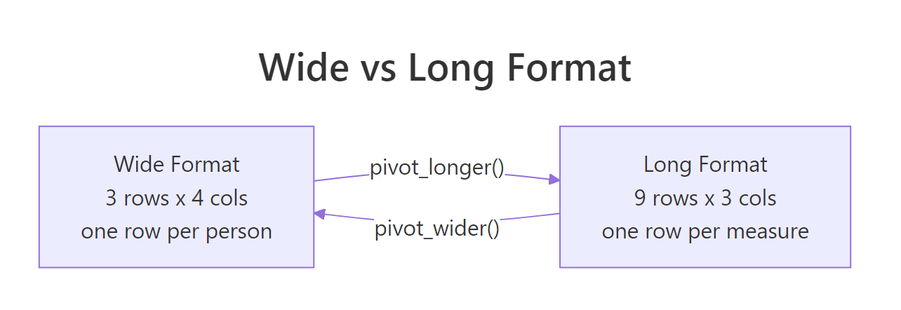
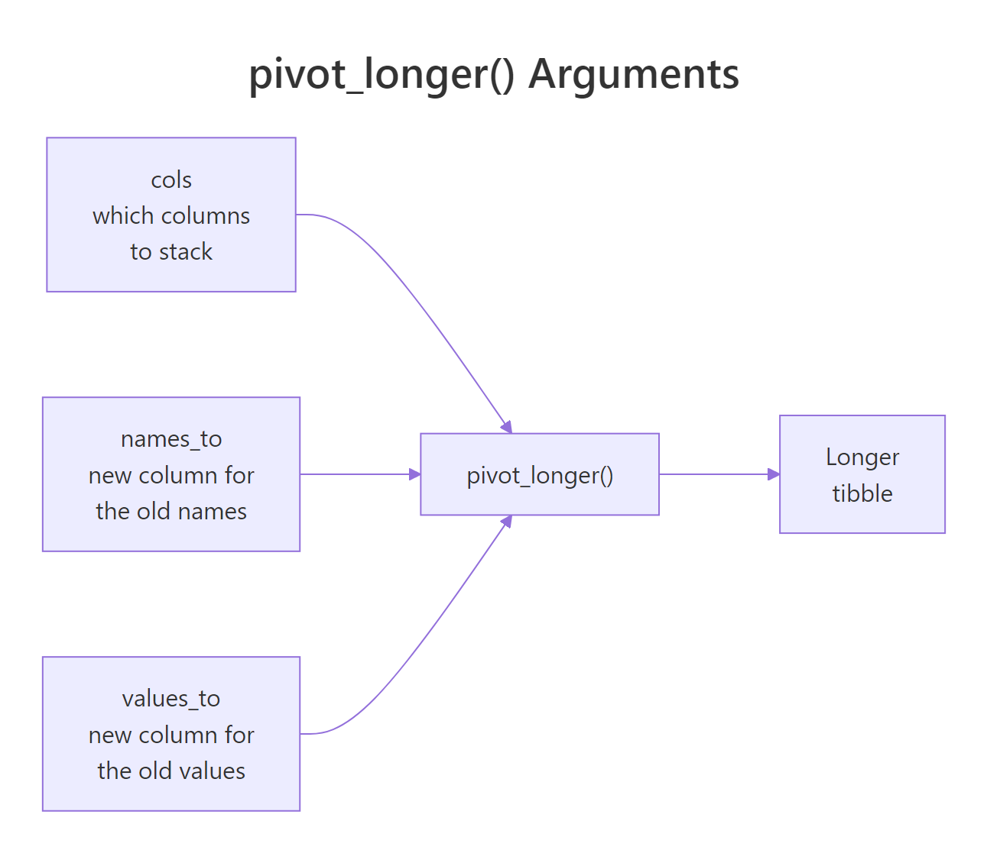
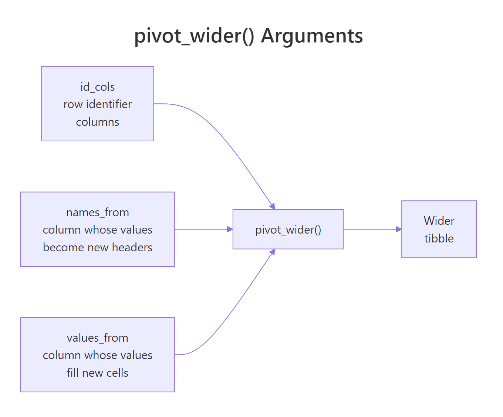

pivot_longer() and pivot_wider(): Reshape Data in R Without Losing Your Mind
pivot_longer() stacks several columns into one name-value pair, moving data from wide to long. pivot_wider() does the opposite — it spreads one column's values across new columns. They are inverses of each other, and together they cover almost every reshape job you will ever meet in R.
What does wide vs long data actually look like?
Most datasets arrive "wide" because humans like compact tables that fit on a screen. Sales by quarter, scores by subject, sensor readings by hour — the label sits in a column header and the number sits in a cell. Analysis tools, however, prefer "long" data where each row is a single observation. Let's see the same data in both shapes so the payoff is obvious before we touch arguments.
The wide version has 3 rows × 4 columns. The long version has 9 rows × 3 columns. Same information, different shape. Notice how every row in the long table now describes exactly one sales figure at one store in one quarter — that is what "tidy" means.

Figure 1: The same sales data in wide and long form. Wide stores values in column headers; long stores them in a single column.
Why prefer long? Because ggplot2, dplyr's group_by(), and most statistical functions expect each observation on its own row. Try to plot the wide table with ggplot — you cannot map "quarter" to the x-axis because it does not exist as a column. Reshape first, plot second.
Q1 + Q2 + Q3 or mean(c(col1, col2, col3)) to compute something across columns, your data is wide and you probably want it long.Try it: Build a wide tibble with student and three grade columns math, science, english, then pivot it to a long form with columns student, subject, grade.
Click to reveal solution
cols = math:english selects those three subject columns by range, and pivot_longer stacks them into two new columns: subject (the former headers) and grade (the former values). student wasn't named in cols, so it's kept as an ID — each student now spans three rows, one per subject.
How does pivot_longer() turn wide columns into rows?
pivot_longer() takes four arguments you will use every day: cols (which columns to stack), names_to (what to call the new "label" column), values_to (what to call the new "value" column), and sometimes values_drop_na to skip empty cells. Let's look at each in a simple example so the anatomy is crystal clear.

Figure 2: How pivot_longer() maps wide columns into a name column and a value column.
Three things worth noticing. First, cols = 2021:2023 selects a range of columns using the same tidyselect helpers as select() — you can also write cols = starts_with("20") or cols = -city to say "everything except city". Second, names_transform turns the text "2021" into an integer, which matters because column headers are always strings even when they look like numbers. Third, the city column is preserved without being named anywhere — pivot_longer keeps every column not listed in cols.
values_drop_na = TRUE to drop those rows automatically. Without it you get explicit NA rows in the long output.Try it: Pivot this expense table so each row is one month-category pair. Drop NA values.
Click to reveal solution
cols = Jan:Mar selects the three month columns as a range and stacks them into month/amount. values_drop_na = TRUE quietly removes the travel-Jan row where the original cell was NA, so you get 8 rows instead of 9.
How does pivot_wider() turn rows back into columns?
pivot_wider() is the inverse. It takes a long table and spreads one column's values across new columns. You need two arguments: names_from (the column whose values become new headers) and values_from (the column whose values fill those new headers). Everything else stays as an ID.

Figure 3: How pivot_wider() maps a name column and a value column into new wide columns.
That is the same shape as the original sales_wide. Round-trip confirmed — pivot_longer and pivot_wider undo each other exactly. When would you actually want to go long→wide? The classic case is preparing a report table for humans: a row per customer, a column per month, ready to paste into a slide. Another is computing differences across groups, like churn rate between Q1 and Q2, which is easier when each quarter is its own column.
names_prefix to prepend text to the new column names, like names_prefix = "score_". Handy when the resulting headers would otherwise start with a number or collide with an existing column.Try it: Spread this long survey table into wide form, one row per respondent.
Click to reveal solution
names_from = question promotes each distinct question label to its own column; values_from = answer fills those columns with the matching score. id isn't named in either argument, so it's treated as the row identifier — one row per respondent.
How do you split compound column names with names_sep and names_pattern?
Real datasets often pack two pieces of information into a single column name. Think sales_2022_Q1, temp_min, or height_cm. pivot_longer() can split these into separate columns during the reshape — no extra separate() step needed.
names_to now takes a character vector — one name per chunk of the original header. names_sep = "_" splits on underscore. The result gives us a clean ticker and price_type pair that you can filter, group, or plot directly.
When your headers follow a more complex pattern — say sales_q1_2022 where a regex would help — use names_pattern with capture groups:
Three capture groups → three destination columns. No nested mutate() or substr() dance.
names_pattern uses regex. If your column names contain characters like dots or parentheses, escape them in the pattern or they will match unintended text.Try it: Pivot this table so country and year become separate columns.
Click to reveal solution
cols = -region stacks every column except region, and names_sep = "_" splits each header into the two pieces named in names_to. values_drop_na = TRUE removes the four NA cells that only existed because the wide table padded every country across both regions.
What happens when pivot_wider() creates missing values?
Going long is always safe — every row lands somewhere. Going wide is riskier. If the long table is missing a combination of names_from and row-ID columns, pivot_wider fills the gap with NA. Sometimes that is what you want. Sometimes it is a bug.
Bilal has no Tuesday record, so pivot_wider inserts NA. Often you would rather see a 0 — absence means "not present", not "unknown". Use values_fill:
The other trap is duplicate keys. If more than one row shares the same student/day pair, pivot_wider cannot decide which present value to use and produces list-columns (with a warning). The fix is either to deduplicate first or pass values_fn = sum (or mean, max, etc.) to aggregate.
values_fill handles missing combinations; values_fn handles duplicate combinations. Memorize this pair — between them they fix 95% of real pivot_wider headaches.Try it: Fix this pivot so missing months become 0 instead of NA.
Click to reveal solution
Without values_fill, users b and c would get NA for the months they never visited. values_fill = 0 tells pivot_wider to treat missing user-month combinations as zero visits, which matches the intuition that "no record" means "did not visit".
How do you reshape multiple value columns at once?
Sometimes one row of long data carries several kinds of measurement. Think: per student, per subject, both a grade and a rank. You want a wide table where each subject gets two columns — one for grade, one for rank. pivot_wider() handles this naturally.
With values_from = c(grade, rank), pivot_wider produces column names by concatenating the value name and the subject. You control the order and glue character with names_sep or names_glue:
{.value} is a placeholder for the name of the value column being spread. {subject} is the current value from names_from. This templating is a huge time-saver when you need the resulting columns in a specific order for a report.
pivot_longer() — pass names_to = c(".value", "year") with names_sep = "_" and a header like grade_2022 becomes a grade column with a year side column. The .value token tells pivot_longer "this chunk is the value column's new name".Try it: Widen this long table so each product becomes two columns, units and revenue.
Click to reveal solution
Passing a vector to values_from asks pivot_wider to spread both measurement columns across the product dimension at once. You end up with four new columns (units_widget, units_gizmo, revenue_widget, revenue_gizmo) and the original region preserved as the row identifier.
When should you reshape vs keep data as-is?
Reshaping is not free. It changes the shape of your data, and if you pipe it through a long chain of dplyr calls you can lose track of what you have. A simple rule: reshape when a downstream function needs the other shape, and reshape back only if you need to present results.
Here are the common triggers for going long:
- You are about to plot with ggplot2. Every aesthetic (
x,y,color,facet) needs a column. If the thing you want on the x-axis is a column header, pivot first. - You are grouping with
group_by(). dplyr groups by column values, not by column names. If your grouping variable is in the headers, pivot first. - You are computing summaries across variables.
summarise()andacross()work on columns, but pivoting to long form makes many "mean per group" jobs a one-liner.
Triggers for going wide:
- You are building a report table where humans will read rows and columns side by side.
- You are computing ratios or differences between specific columns — for example Q2 revenue divided by Q1 revenue is trivial when they are two columns and awkward when they share one.
- You are exporting to a spreadsheet where analysts expect the wide layout.
Try it: Given this long table of temperatures, produce a wide report showing min and max temperature per city per year.
Click to reveal solution
Passing two columns to names_from asks pivot_wider to build one new column per unique year/kind combination, joining the levels with an underscore. Each city ends up with four summary columns side by side — ideal for a compact report.
Practice Exercises
These exercises combine multiple ideas from the post. Work through them in order — each builds on the previous.
Exercise 1: Clean up a messy survey
You receive this survey export. Reshape it so each row is one respondent-question pair, then compute the mean score per question.
Solution
Exercise 2: Build a pivot-table report
Turn this sales log into a wide report: one row per store, one column per product, and a final column with the store total. Fill missing combinations with 0.
Solution
Exercise 3: Round-trip a dataset with multiple values
Take this exam table, go wide with two value columns, then long again to recover the original shape.
Solution
Complete Example
Here is an end-to-end pipeline on a messy fake dataset. We start wide, reshape to long for analysis, then widen again for the final report.
The .value token does the heavy lifting in both directions. In step 2 it captures the prefix (gdp or pop) as a destination column name. In step 4 it plugs those names back into the new wide headers. Once you have that token in your head, the rest of tidyr feels obvious.
Summary
| Concept | pivot_longer() | pivot_wider() |
|---|---|---|
| Direction | wide → long | long → wide |
| Main args | cols, names_to, values_to | names_from, values_from |
| Splits names | names_sep, names_pattern | — |
| Combines values | — | values_from = c(a, b) |
| Missing combos | values_drop_na | values_fill |
| Duplicate keys | — | values_fn |
| Templated names | — | names_glue |
| Special token | .value (inverse) |
.value |
Four rules to remember:
- Plot long, report wide. Long form for analysis and ggplot; wide form for human-readable tables.
colsuses tidyselect. Same helpers asselect()—starts_with(),-col, ranges, etc.- Missing vs duplicate are different fixes.
values_fillfor holes,values_fnfor collisions. .valueis the round-trip token. Use it when headers encode both a variable name and a group.
References
- tidyr pivoting vignette — the authoritative reference from the package authors.
- pivot_longer() reference
- pivot_wider() reference
- Hadley Wickham, Tidy Data, JSS 2014 — the paper that started it all.
- R for Data Science, 2e — Data Tidying chapter
- tidyselect reference — for the helpers
colsaccepts.
Continue Learning
- dplyr filter() and select() — the row and column basics that pair with every pivot.
- dplyr group_by() and summarise() — long data shines here; pivot first, group second.
- R Joins With Visual Diagrams — combine reshaped data with other tables.